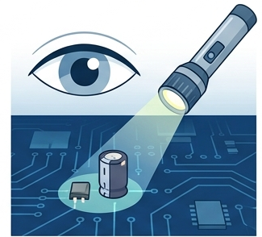
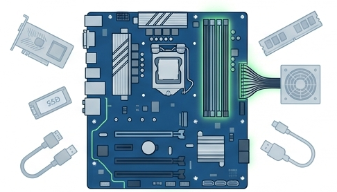
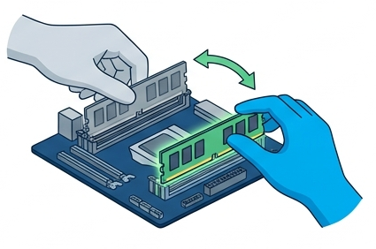
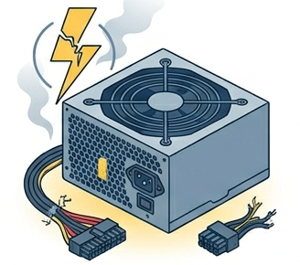
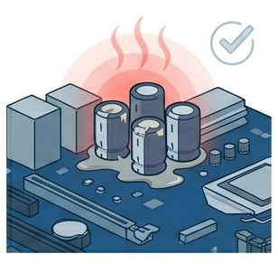
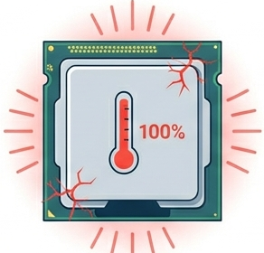
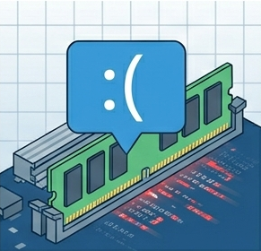
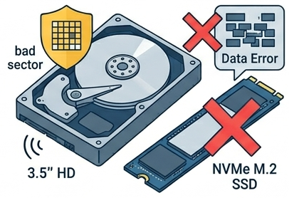
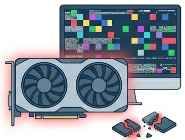
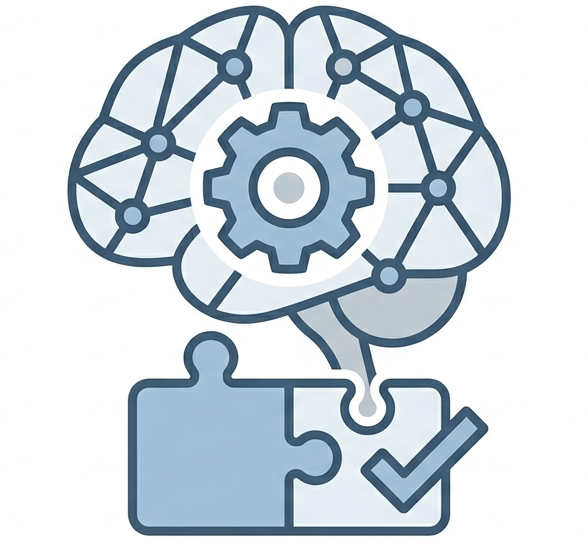

Oficina de Montagem e Conexão
AULA 11 — DIAGNÓSTICO DE FALHAS E SUBSTITUIÇÃO DE PEÇAS
1. Introdução
O diagnóstico de falhas é uma das competências centrais do técnico de informática. Mais do que conhecer os componentes, o técnico precisa saber identificar o que falhou, por qual motivo e como resolver — com o mínimo de substituições desnecessárias e o máximo de precisão.
Princípio fundamental do diagnóstico: eliminar variáveis uma de cada vez. Trocar vários componentes ao mesmo tempo impede identificar qual era o defeituoso.
2. Metodologia de Diagnóstico
O diagnóstico segue uma sequência lógica do mais simples para o mais complexo:
Etapa 1 — Coleta de informações
Antes de abrir o gabinete ou trocar qualquer peça, levantar:
- O sistema já funcionou alguma vez ou nunca ligou?
- O problema é intermitente ou constante?
- Houve alguma alteração recente (nova peça, queda de energia, atualização)?
- Há sintomas físicos: cheiro de queimado, barulho incomum, LED piscando?
💡 Um problema intermitente é mais difícil de diagnosticar que um constante — exige monitoramento ao longo do tempo e atenção a padrões (ocorre só sob carga, só após tempo ligado, só em determinados programas).
Etapa 2 — Observação visual

Com o gabinete aberto e o sistema desligado:
- Verificar capacitores estufados ou queimados na placa-mãe
- Verificar sinais de queimado (escurecimento, cheiro)
- Verificar cabos desconectados ou mal encaixados
- Verificar cooler parado ou solto
- Verificar LEDs de diagnóstico da placa-mãe (presentes em modelos intermediários e avançados)
Etapa 3 — Configuração mínima de teste

Reduzir o sistema ao mínimo necessário para o POST:
- Placa-mãe + CPU + cooler + 1 módulo de RAM + fonte
- Remover: GPU dedicada, armazenamento, periféricos USB, cabos de front panel (exceto Power SW)
- Ligar diretamente pelo jumper Power SW ou por curto dos pinos com chave de fenda
💡 Se o sistema passa no POST com configuração mínima, o problema está em um dos componentes removidos. Reincorporar um por vez até identificar o causador.
Etapa 4 — Isolamento por substituição

Substituir componentes suspeitos por outros conhecidamente funcionais:
- Trocar o módulo de RAM por outro testado
- Testar a fonte em outro sistema ou com testador de fonte
- Testar a placa-mãe com outra CPU compatível
- Testar o armazenamento em outro sistema
Etapa 5 — Diagnóstico por ferramentas de software
Quando o sistema inicia mas apresenta instabilidade:
- Utilizar ferramentas de monitoramento e teste (listadas na seção 7)
- Correlacionar sintomas com leituras: temperatura, tensão, S.M.A.R.T., erros de memória
3. Sintomas e Diagnóstico por Componente
3.1 Fonte de Alimentação

| Sintoma | Causa provável |
|---|---|
| Sistema não liga, sem reação alguma | Fonte sem energia, fusível queimado ou defeito interno |
| Liga e desliga imediatamente | Proteção por sobrecorrente (OCP) ativada — curto em componente |
| Reinicializações espontâneas sob carga | Fonte subdimensionada ou trilho +12V instável |
| Cheiro de queimado ao ligar | Componente interno da fonte danificado |
⚠️ A fonte nunca deve ser aberta para reparo em campo. É equipamento de alta tensão com capacitores que retêm carga mesmo desligada. Em caso de defeito confirmado: substituição.
3.2 Placa-mãe

| Sintoma | Causa provável |
|---|---|
| Sem POST, sem bipes, sem imagem | Placa-mãe, CPU ou RAM com defeito — usar configuração mínima para isolar |
| Bipes contínuos ou padrão específico | Código de bipes indica componente com falha (ver seção 5) |
| USB, portas de rede ou áudio não funcionam | Controladores do chipset com defeito ou driver ausente |
| Capacitores estufados visíveis | Degradação por calor ou corrente — substituição da placa |
3.3 Processador

| Sintoma | Causa provável |
|---|---|
| Sistema não realiza POST | CPU com defeito, mal encaixada ou incompatível com o socket/firmware |
| Travamentos e reinicializações sob carga | Superaquecimento (verificar pasta térmica e cooler) |
| Throttling constante (desempenho muito abaixo do esperado) | Temperatura elevada ou limitação de energia (VRM fraco) |
| Pinos dobrados visíveis | Dano físico — verificar possibilidade de endireitamento com agulha (risco alto) |
3.4 Memória RAM

| Sintoma | Causa provável |
|---|---|
| Sem POST, sem imagem | RAM ausente, mal encaixada ou defeituosa |
| Tela azul (BSOD) com códigos de memória | Módulo com células defeituosas |
| Sistema reconhece menos RAM que o instalado | Módulo não detectado — verificar slot e encaixe |
| Instabilidade com XMP/EXPO ativo | Perfil instável — tentar frequência intermediária ou desativar |
3.5 Armazenamento

| Sintoma | Causa provável |
|---|---|
| Dispositivo não aparece no BIOS | Cabo desconectado, slot M.2 incompatível, dispositivo defeituoso |
| HD com cliques rítmicos | Falha mecânica iminente — backup urgente |
| Lentidão extrema em SSD | Thermal throttling ou células NAND degradadas |
| S.M.A.R.T. com status "Caution" ou "Bad" | Dispositivo em risco — substituição planejada |
3.6 Placa de Vídeo (GPU)

| Sintoma | Causa provável |
|---|---|
| Sem imagem com GPU dedicada | GPU mal encaixada, cabo de alimentação PCIe ausente, slot defeituoso |
| Artefatos visuais (pixels coloridos, distorções) | GPU superaquecida ou memória VRAM com defeito |
| Driver instala mas imagem trava em jogos | Temperatura elevada ou alimentação insuficiente |
| Fan da GPU não gira | Rolamento do fan com defeito ou controle PWM com problema |
4. Códigos de Bipes do POST
Quando o sistema não consegue completar o POST, o BIOS emite bipes audíveis pelo alto-falante interno do gabinete (speaker). O padrão varia por fabricante de BIOS.
BIOS Award / Phoenix (comum em placas antigas)
| Padrão de bipes | Significado |
|---|---|
| 1 bipe curto | POST concluído com sucesso |
| 1 bipe longo + 2 curtos | Erro de vídeo (GPU ou sinal) |
| 1 bipe longo + 3 curtos | Erro de vídeo |
| Bipes contínuos longos | Erro de RAM |
| Sem bipe, sem imagem | Falha grave — CPU, placa-mãe ou fonte |
BIOS AMI (comum em placas modernas)
| Padrão de bipes | Significado |
|---|---|
| 1 bipe curto | POST OK |
| 2 bipes curtos | Erro de paridade de memória |
| 3 bipes curtos | Falha na memória base |
| 5 bipes curtos | Erro no processador |
| 1 longo + 2 curtos | Erro no controlador de vídeo |
💡 Placas modernas com LEDs de diagnóstico (como as linhas ROG, MEG, Aorus) mostram o código de erro visualmente — mais preciso que os bipes. Consultar o manual para o mapeamento de cores e padrões.
5. Substituição de Peças — Procedimentos
5.1 Antes de substituir qualquer peça
- Confirmar o diagnóstico com pelo menos dois indícios convergentes — não substituir com base em um único sintoma.
- Verificar compatibilidade da peça substituta: socket, geração, form factor, tensão.
- Registrar a configuração atual antes de alterar (versão de BIOS, configurações de XMP, particionamento).
- Realizar descarga eletrostática antes de manusear qualquer componente.
5.2 Substituição de RAM
- Desligar o sistema e desconectar da tomada.
- Aguardar 30 segundos (descarga de capacitores da placa-mãe).
- Abrir as travas do slot e remover o módulo pelas bordas.
- Instalar o módulo substituto no mesmo slot, verificando o entalhe de orientação.
- Confirmar detecção no BIOS antes de inicializar o SO.
5.3 Substituição de Armazenamento
HD/SSD SATA:
- Desligar e desconectar.
- Remover os parafusos de fixação da baia.
- Desconectar cabo SATA de dados e SATA Power.
- Instalar o substituto e reconectar os cabos.
- Verificar detecção no BIOS.
SSD NVMe M.2:
- Desligar e desconectar.
- Remover o dissipador M.2 (se houver).
- Remover o parafuso de retenção e extrair o SSD em ângulo.
- Instalar o substituto, fixar o parafuso e reinstalar o dissipador.
5.4 Substituição de Fonte
- Fotografar ou mapear todos os cabos conectados antes de remover.
- Desconectar todos os cabos da fonte dos componentes (ATX 24 pinos, EPS, SATA Power, PCIe).
- Remover os quatro parafusos de fixação no painel traseiro.
- Instalar a fonte substituta e reconectar todos os cabos na mesma configuração.
- Testar com configuração mínima antes de reconectar todos os componentes.
5.5 Substituição de CPU
⚠️ Substituição de CPU exige confirmação de compatibilidade com o socket e com a versão do firmware (BIOS). Algumas gerações de CPU exigem atualização de BIOS antes de serem reconhecidas.
- Remover o cooler completamente (desconectar fan, soltar fixação).
- Limpar a pasta térmica do IHS e da base do cooler.
- Abrir o mecanismo de travamento do socket.
- Remover a CPU pelas bordas, sem tocar nos contatos.
- Instalar a CPU substituta seguindo a orientação do triângulo/entalhe.
- Fechar o mecanismo de travamento.
- Aplicar pasta térmica e reinstalar o cooler.
- Confirmar detecção no BIOS.
6. Ferramentas de Diagnóstico
| Ferramenta | Tipo | Função |
|---|---|---|
| HWMonitor | Software | Temperatura, tensões e RPM de todos os componentes |
| CPU-Z | Software | Identificação de CPU, RAM (frequência, timings, fabricante) |
| MemTest86 | Bootável | Teste completo de integridade da RAM (independente de SO) |
| CrystalDiskInfo | Software | S.M.A.R.T. de HDs e SSDs |
| CrystalDiskMark | Software | Benchmark de velocidade do armazenamento |
| Prime95 | Software | Teste de estabilidade e temperatura da CPU sob carga máxima |
| FurMark | Software | Teste de estabilidade e temperatura da GPU sob carga máxima |
| Testador de fonte | Hardware | Verifica tensões dos trilhos da PSU sem necessidade de sistema completo |
| Multímetro | Hardware | Medição direta de tensão nos conectores da fonte e nos trilhos da placa-mãe |
7. Síntese da Aula
| Conceito | Ponto central |
|---|---|
| Metodologia | Do mais simples ao mais complexo; uma variável por vez |
| Configuração mínima | Isola o problema antes de substituir qualquer peça |
| Sintomas por componente | Cada componente tem padrão de falha reconhecível |
| Códigos de bipes | Indicam o componente com falha quando não há imagem |
| Substituição | Confirmar diagnóstico e compatibilidade antes de trocar |
| Ferramentas | Software para monitoramento; hardware para medição direta |

Exercícios de Fixação